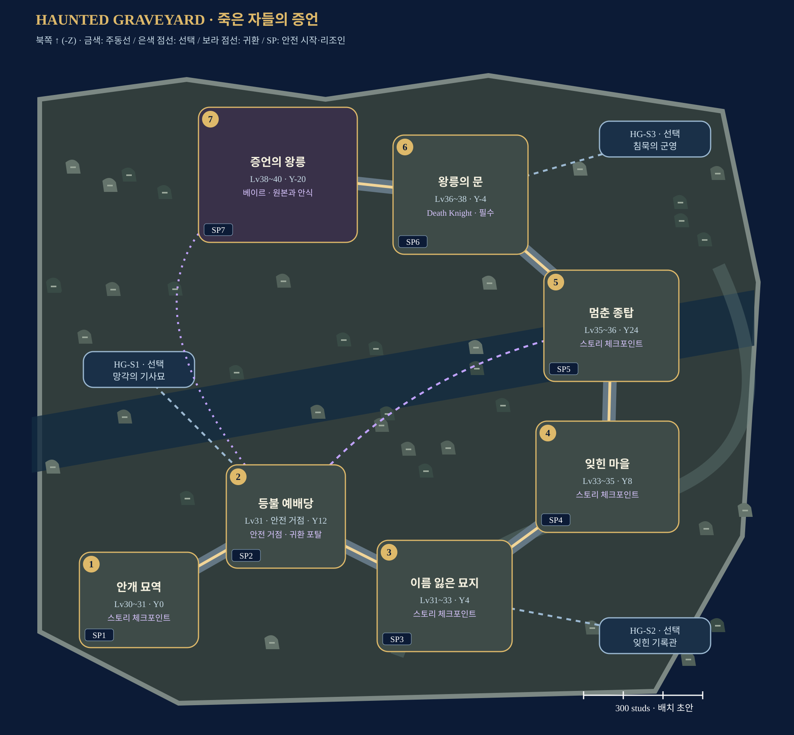

이름을 되찾고, 지워진 삶을 기록하고, 망자들이 떠날 자유를 지키는 왕릉 원정.
제작 배치 초안 · 1~4인 · Lv30–40 · Roblox Studio 구현 전
각 스토리에 SP1~SP7 안전 시작 마당을 둔다. 시작·이어하기·재플레이·리조인을 지원하며, 스토리 사이는 직접 이동한다. 에픽 이동·안전 귀환은 포탈.

원본 지도 열기 · 제작 사양 · 좌표 데이터
내부 그림은 연결도이며 실제 축척/콜라이더가 아니다. 몬스터·장치의 정확한 위치는 블록아웃 후 결정한다.
회녹 지면·낮은 묘비·앙상가지·폐예배당·보라 포탈을 공유한다. 타워 패드와 U턴은 RPG 자유 이동 공간으로 재구성한다.
베이르는 Lich Sovereign 원본을 활용한다. 전투 승리 뒤 원본을 넘기고 망자들의 안식을 돕는다. Dread Commander는 에픽 후 선택 보스다.